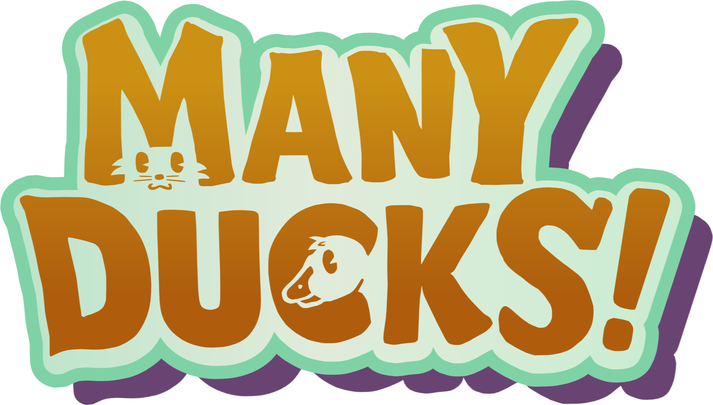
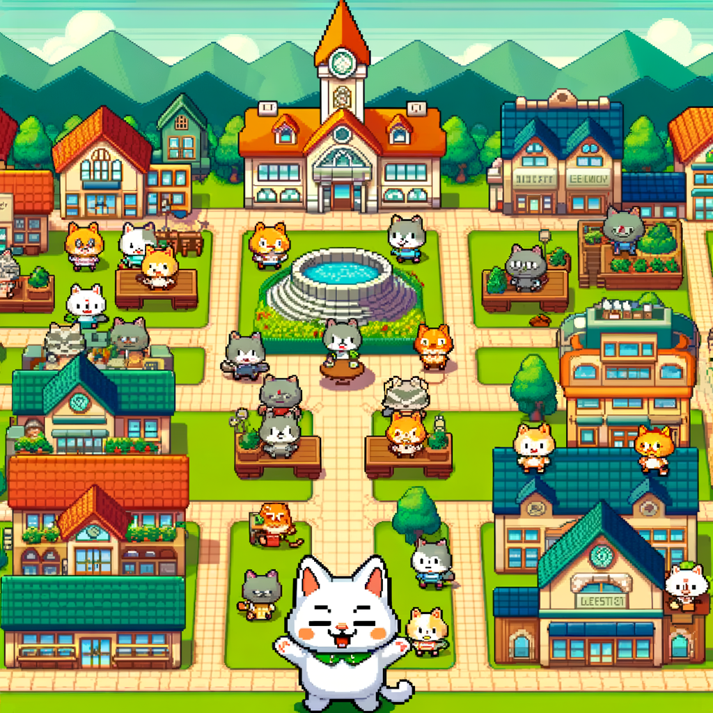

Our Projects

Many Ducks is an enchanting life simulation RPG where you play as a cat managing a bustling duck ranch in a vibrant 2.5D world. With procedurally generated landscapes and AI-powered interactions, every adventure feels fresh and unique.
As you prepare for the town's cherished Duck Parade festival, you'll hatch, raise, and evolve extraordinary ducks, exploring diverse terrains and bonding with quirky townsfolk.
